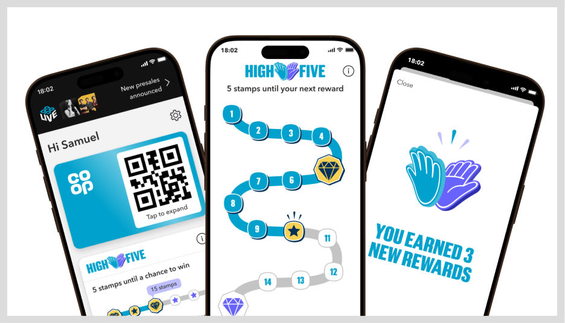
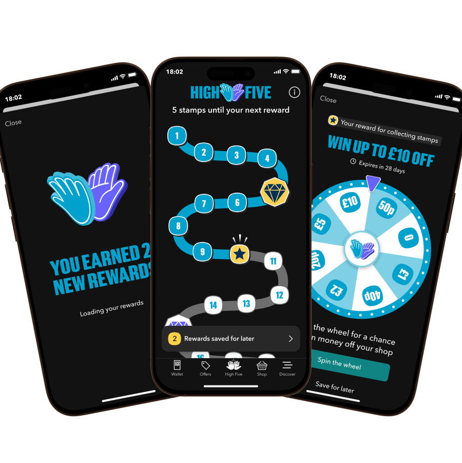
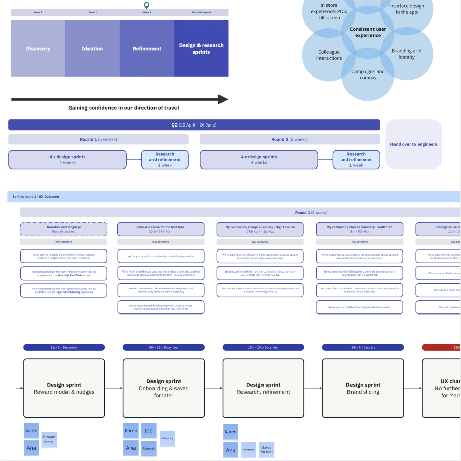
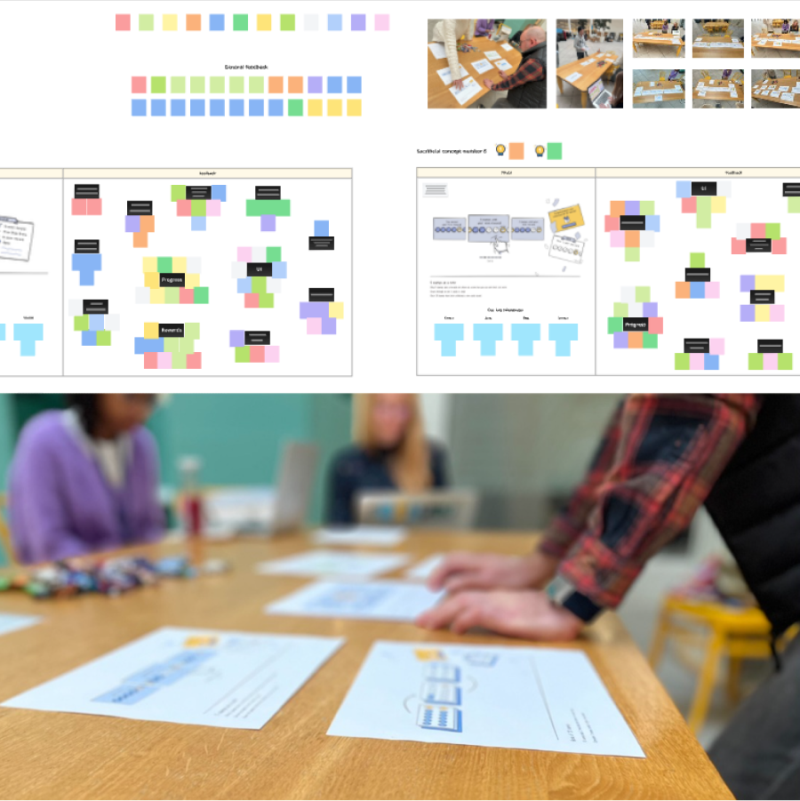

Co-op High Five!
Leading the evolution of Co-op's flagship Membership proposition.
Background
Co-op was transforming its Membership loyalty proposition into a phased digital experience, allowing the business to release value early and learn as new features were introduced.
I played a key role in shaping the proposition from its early foundations through to leading the design of its next phase, integrating community value while maintaining a simple, scalable member experience.

What I did
- Led a multidisciplinary design team, setting direction, planning roadmaps and balancing user, business and technical needs.
- Framed complex challenges through discovery, journey mapping, rapid prototyping and user research, translating insights into clear design direction.
- Crafted the digital experience and visual language, translating a benefit-first brand into an intuitive, accessible app experience.
- Built trusted stakeholder relationships, embedding collaborative workshops, regular playbacks and tailored feedback approaches.
- Protected the customer experience throughout delivery by balancing engineering constraints, negotiating roadmap priorities and using evidence to influence product decisions.

Result
- Established the design foundations for Co-op's flagship Membership proposition, supporting phased delivery and future product evolution.
- Delivered accessible, user-tested experiences that balanced customer needs with business objectives and technical constraints.
- Influenced the digital application of the brand, helping establish a consistent visual standard for the Membership experience across the app.
- Built strong cross-functional alignment, reducing delivery risk and enabling faster, more confident product decisions.
- Created a scalable design foundation that enabled the Membership proposition to evolve through future phases.

